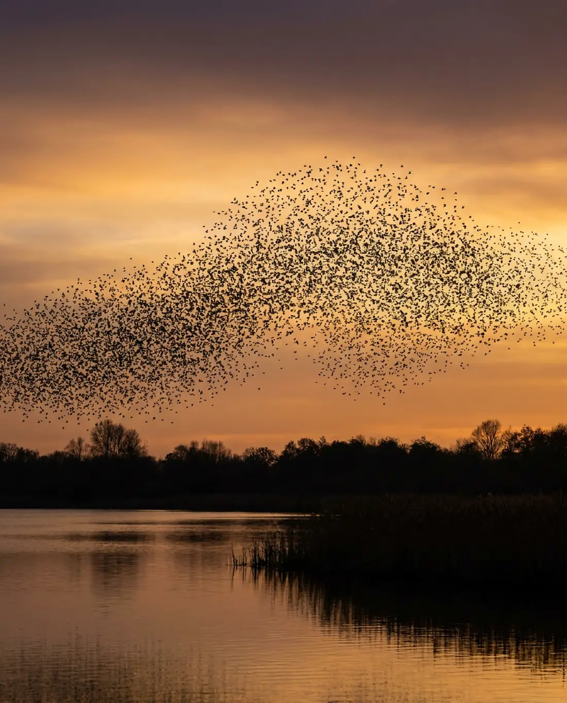
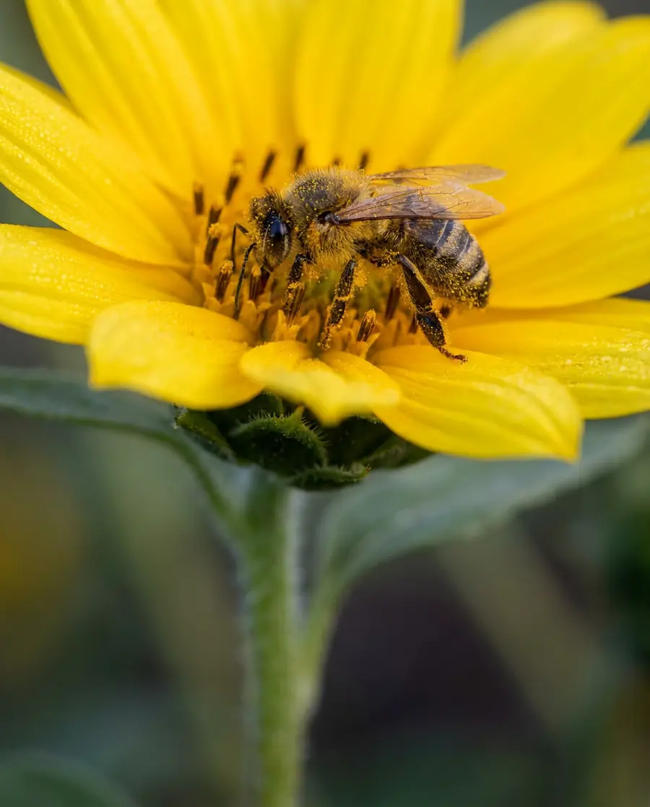
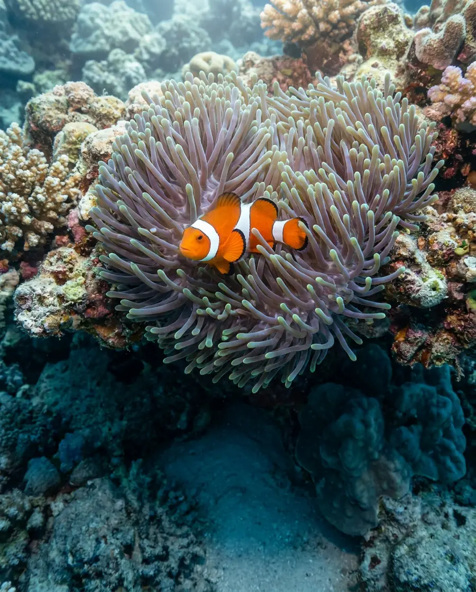

Evolucionismo
Todo evoluciona
Evolucionar o extinguirse. Una ley escrita hace 200 años no puede responder a los problemas de hoy. Y la evolución humana no se deja al azar: se guía con políticas que nos hagan cada día mejores.
Proponemos gobernar con evidencia y no con opiniones: cada decisión se mide, lo que funciona se queda y lo que no, se cambia. Inteligencia artificial, blockchain y ciudadanos vigilando, trabajando en simbiosis.

La naturaleza, la tecnología, la economía y el propio ser humano cambian sin parar. Los sistemas que nos gobiernan deberían cambiar al mismo ritmo, y con método.
Evolucionar o extinguirse. Una ley escrita hace 200 años no puede responder a los problemas de hoy. Y la evolución humana no se deja al azar: se guía con políticas que nos hagan cada día mejores.
Cada ley es una hipótesis. Se simula antes de aplicarla, se mide mientras funciona y, si los datos muestran que falla, se cambia. Sin dogmas: con datos.
Catorce principios agrupados en cinco ideas, tomados de la novela El País de las Pasiones.
Fin del dogma, la ley como hipótesis y gestores auditables.
Decisiones informadas y guerra a la demagogia con verificación en tiempo real.
Dinero que nadie imprime a capricho y capitalismo evolutivo y sostenible.
Incentivos que hacen la corrupción imposible o carísima. La diversidad es ventaja.
Educación toda la vida y lo básico garantizado para todos.
Las piezas del modelo, tal como las imagina la novela.
Predice crisis, detecta corrupción e ineficiencia y administra lo automatizable. Su ley suprema: propiciar la evolución del ser humano y nunca ocultar errores.
Cada política se prueba en una simulación de la ciudad o el país antes de tocar la vida real.
Un libro público e inmutable donde se registra cada peso. Lo que no está en el Ledger no existe ante la ley.
Leyes escritas como contratos que se cumplen solas y se derogan si no logran su meta.
Digital, finita y rastreable. Su valor se ancla a la energía y nadie puede imprimir más.
Datos abiertos para que cualquier persona pueda auditar a quien gobierna.
Cinco líderes en los cargos altos (presidencia, gobernación, alcaldía) y mínimo dos en los demás. La IA los monitorea siempre y cada decisión se simula antes de aplicarse.
Aquí entendimos que todo evoluciona. Quien no se adapta, desaparece.

Eligen su nuevo hogar comparando evidencia, no obedeciendo a una reina.

Nuestro nombre: la vida no avanza sola, avanza en alianza.
Fábricas de agua de Bogotá y Quito. Cuidarlas es política con evidencia.
Nuestro asistente de IA. Tú eliges la potencia y él gasta solo lo necesario.
1 día de prueba: chat en los cuatro niveles, hasta 10.000 tokens. Sin imágenes, video ni voz.
Los cuatro niveles, 2 millones de tokens, 10 imágenes y 1 video por semana, voz, transcripción, archivos y herramientas.
La pasión es el motor. La ciencia, el volante.El País de las Pasiones · Andrés Santana